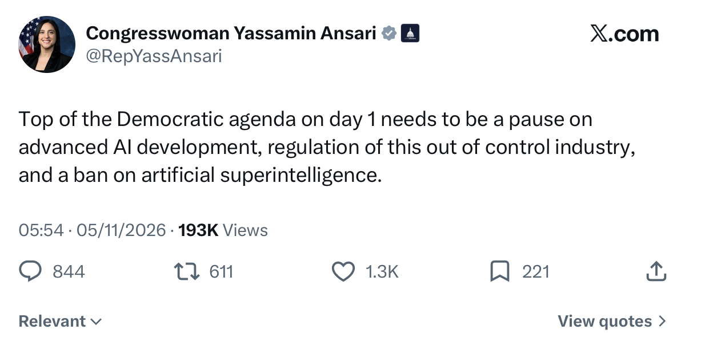
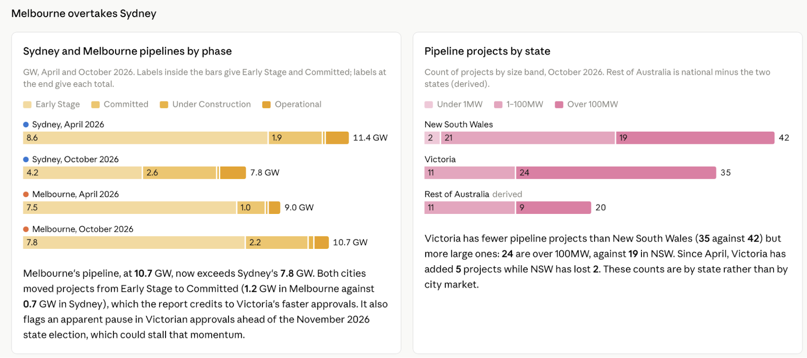
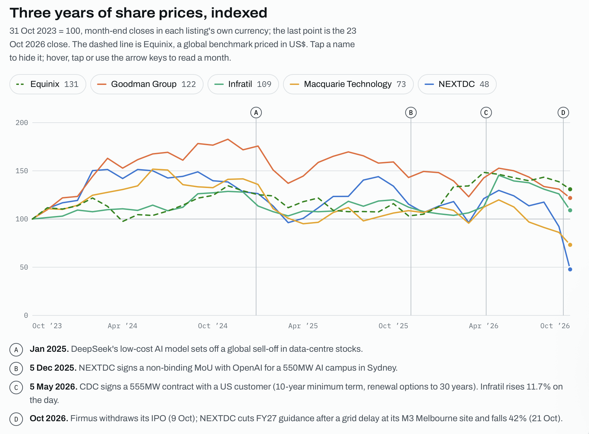
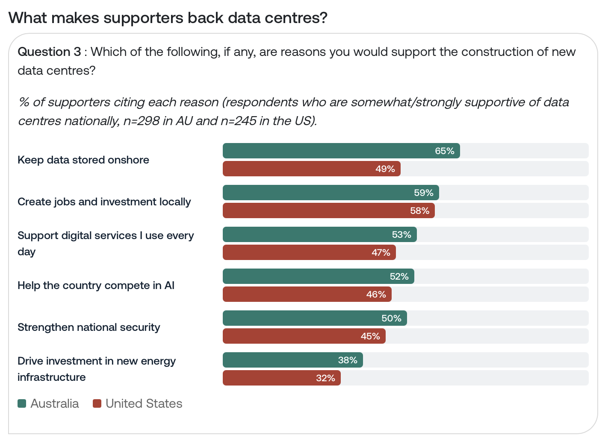
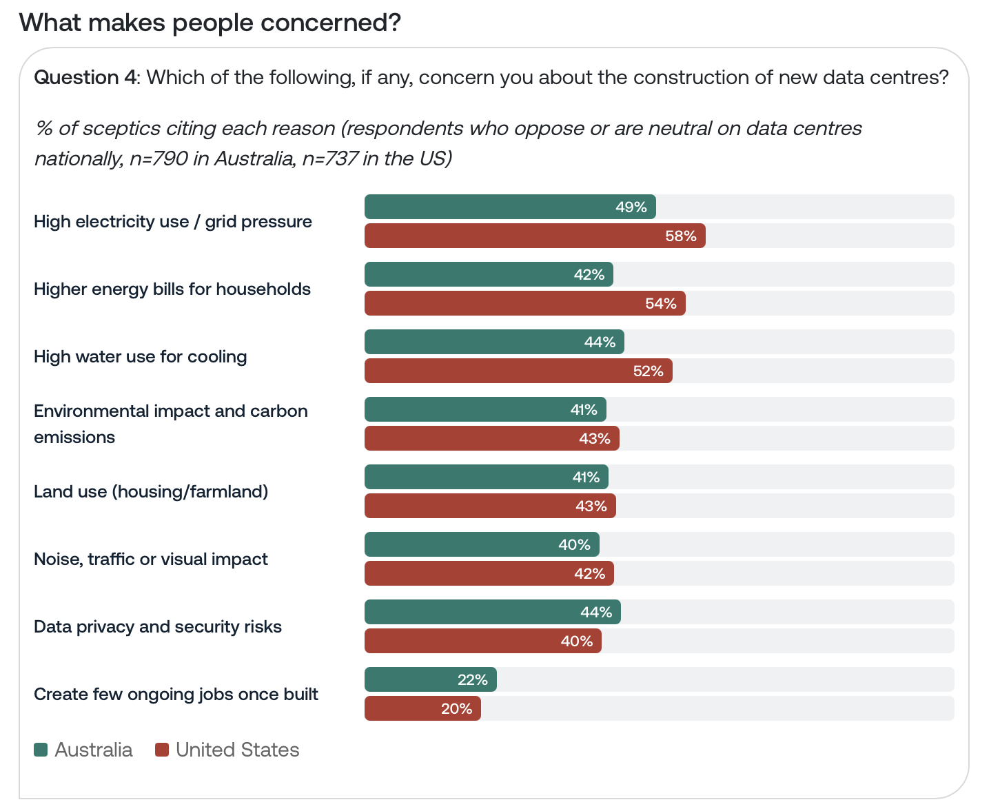
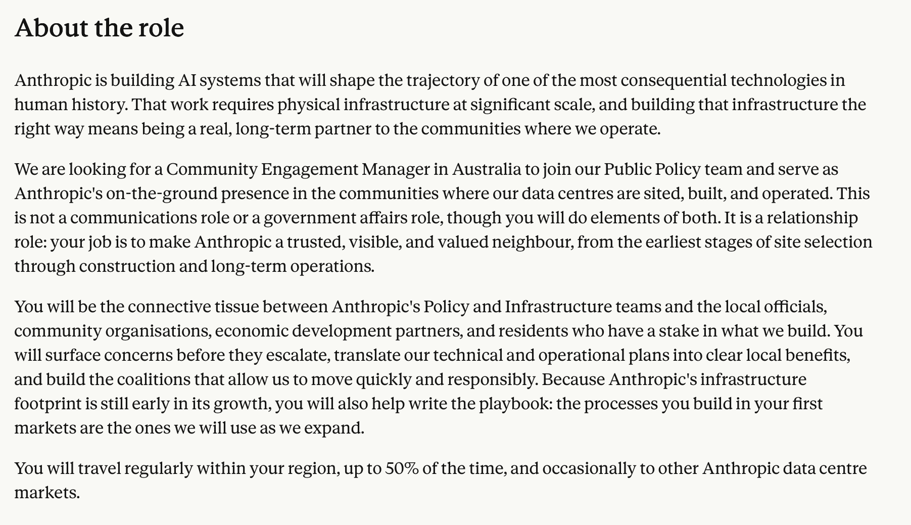
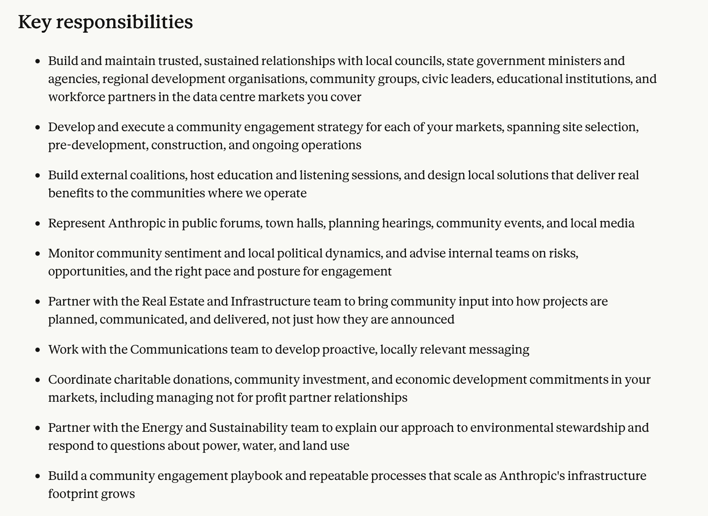

Australia’s AI Strategy Can Work
Foreword
The world is changing. We are in the dusk of one era, and the dawn of another. Ideas, norms and social contracts that underpinned global trade, cooperation and ‘multinationalism’ since the end of World War II have been severely tested. New advances in a technology called Artificial Intelligence (AI) seem to have the potential to reshape many elements of the global economy and power structure, how we as humans understand maths and science, perhaps even our own existence.
Two countries sit at the table: China and the United States. A small group of other powerful but less influential nations must battle to buy a seat at that table, often between themselves, by offering a suite of different things the two powers find attractive. Analysts and policy-types tend to refer to this group as ‘Middle Powers,’ although each is governed by its own national interest and incentives and not all share the same values or ambitions.
Australia sits in a unique position among this group when it comes to pitching for a seat. It has cheap renewable energy, huge amounts of land, a stable democracy (and is a long-standing security and intelligence partner of the United States), continuity between administrations, an educated public, and represents a stepping stone into the wider Asia-Pacific region. Western frontier AI companies like Anthropic and OpenAI have committed rhetorically and financially to expanding in Australia - with a series of asks. The Government has signalled an interest in having them, citing national security and safety reasons for doing so. But a number of legitimate blockers sit in the way, and with the Government due to publish its AI regulation in the first quarter of next year, the country is drawing the close of a key period for setting itself on a strong foundation for the next decade.
Being a ‘Middle Power’ means spotting moments where the scale tilts slightly in your favour and acting with speed and drive. Now is one such moment. As I write this note on the morning after the US Midterms, America has emphatically rejected many elements of the second Trump administration - and concerns around AI data centres seemed to have played a part in the wider discontent. In the coming months and years, a Democrat-controlled Senate and House may block, question and hold hearings into the AI leaders who aligned themselves too closely with the Trump White House over the last 24 months. The Party may seek to differentiate itself from the Republicans by going hard on AI regulation, AI safety, and the community benefits aspect of this technology as it heads into the next election, riding on popular resentment and discontent. Data centre rollout won’t end totally, but may find itself blocked and burdened by politics even more so than before. These are not inherently bad things, and as others have noted, some of those AI firms may actually benefit from not being snapped with the President on an almost weekly basis, and communities too now find themselves in a potentially stronger negotiating position.

But why does it matter to Australia? This is a moment in which the scales are tilting slightly. US frontier companies will be waking up today thinking about their new political strategies. How far did we go under Trump in our rhetoric, our donations, our public comments? How can we diversify our compute rollout? How can we try and protect our commercial strategies from an incoming pendulum swing of potential political retribution? This gives Australia leverage - even in small amounts - that did not exist a week ago. Australian diplomats, executives, and critical players should be hitting the phones with their US counterparts.
This note is a series of observations I’ve made since arriving in Australia a month ago. It looks at the country’s current ‘AI Strategy’: what the politicians are saying, what the data centre groups are arguing for, what the communities and councils are pushing back on. It opens with a series of recommendations for these general groups, based on my own analysis and from spending most of my twenties working on issues that are chokepointed around an inability for groups to communicate complexity to one another. Finally, no one paid me to write this; I did so because I wanted to learn more about the subject at hand. Any mistakes that follow are, obviously, those of my unpaid intern. Should you wish to discuss this note or any of its recommendations, please do get in touch.
Sam Hogg
Observations & Recommendations
Let us follow this set of assumptions for this note. The leading frontier AI companies will continue to release models publicly, but internally, they have models that are far more powerful than what we see in the public domain. Access to these models will become increasingly important and increasingly limited, but again from the outside we will continue to see a jagged frontier, where it looks like AI is really good at some things - even surpassing humans - but much slower and worse on other tasks or jobs. The next chapter of AI will involve things like robots implementing AI in their work (what is loosely called ‘embodied AI) and potentially significant changes in theoretical sciences, where these systems appear to be very smart indeed. Governments around the world outside of the United States will, to varying degrees, have limited access or insight into what these companies and models can do. They will, however, also continue to be pitched by these companies and the US government to use the models on terms favourable to Washington and San Francisco. Chinese AI firms meanwhile will offer cheaper models, but they will lag behind their US counterparts and present security risks, especially for nations that do not sit equidistant between the US and China.
- For the Australian Government: Any legal effort to have some insight into these models is both a national security imperative and economic advantage if able to be deployed in-territory. IF this is the case, then the Government should triple down on its approach to getting frontier companies to train part of their models in the country. This will involve coming to a rapid answer on copyright (perhaps along the lines of Good Ancestors proposal here, with AI companies training in Australia paying into a fund that supports Australian creators - it should also make a more coherent case for why allowing the models to train on Australian data, learning its cultures and customs, is a good thing) and AI-focused data centre buildout (involving listening to local communities on issues such as aesthetics of the building process, aside from regular complaints over water and energy.)
- Sort It: There is a first mover advantage in getting the IP issue sorted - no other Middle Power has done this to date.
- For the Australian defence and security community: Again, following the above assumption, Australia represents a longstanding security and defence partner with the United States. A Five Eyes member, it is also a safe neighborhood in which to build compute (unlike the Middle East, where UAE data centres have been hit by missiles), and could potentially scale the appropriate security scaffolding necessary to reach RAND Security Level 5 (SL5) facility for operating the training of AI systems. Australia has a rich geopolitical history of analysing its region, which contains China.
- AUKUS for Compute: it may be worth strategising around this concept. An argument would be as follows: Australia should offer suitable sites, deliverable electricity and connectivity, coordinated planning processes and trusted security arrangements for American frontier companies and the American state. In return, participating companies would make binding commercial commitments and provide specified access for Australian evaluators and authorised government users, alongside favourable compute access for Australian research. Britain, with the world’s best resourced and staffed AI Security Institute (and the third AUKUS partner) would contribute evaluation expertise, security capability and AI-enabled biosecurity research.
- For Australian policymakers: when discussing the technology at hand, it is important to be using it. This may sound obvious, but if your last interaction with ChatGPT or Claude is over six months ago, you are dealing with an example of the technology that is badly dated. This will make it difficult for you to further estimate its relative strengths (or weaknesses.) Highly motivated individuals may also want to consider creating an international grouping of politicians from other democratic parliaments to share information and strategies for negotiating with frontier companies/understanding and advising on legislation passing through other countries on these matters.
- Expertise needed: It will also be essential for Australia to keep investing in the expertise necessary to understand the frontier of this technology - the new AI Safety Institute represents a good but small start - so that the Government can produce coherent strategies. This must be coupled with more traditional foreign and defence policy expertise too.
- For Australian data centre companies and groups: there is an element of the two sides - builders/operators and the local communities/councils - talking past each other on this. The former has sometimes written of legitimate concerns over data centre buildout as being imported American discourse, while the latter has at times taken a ‘I want it, just not in my back yard’ approach which disregards potential benefits of these centres both locally and in terms of protecting and projecting Australia’s national interest. But reading analysis it is also clear that community and local political engagement has been poor. Take one example: the Municipal Association of Victoria (MAV), the peak body for all 79 councils in Victoria, passed “a resolution at its October state council meeting calling for a moratorium on approvals for all new or expanded data centres until a "comprehensive" planning and environmental framework was established.” In doing so, it stated “councils are not being given enough time, information and resources to properly consider the cumulative impacts of data centres proposals in their municipality.”This may be true, whilst it also may be the case that these councils are responding to local political incentives (even if these are not always based on correct factual assessments) As this note explores, several frontier companies and data centre firms are now hiring for community engagement, but it would be unhelpful to paint the local pushback as being an American import.
- For local communities and councils: it seems reasonable to ask the companies building or upgrading the data centres in your areas for more concrete environmental assessments or energy costings, and for them to cover the latter. However, the conversation is two ways: what do you want in return? What can these firms offer? This is a democracy, and democracies require concessions for their survival to continue. For example, there was bitter pushback against the Sydney Opera House and the original Snowy Mountain Scheme, and now both are widely viewed as essential parts of Australian life. There is a trade off at some level that must be achieved, and it can be a positive one.
- For Frontier AI Companies: this is now a tale as old as time (time being measured since the arrival of ChatGPT) that the messaging is off. Australian’s oscillate between being warm to not warm on the data centre expansion/upgrade - which, as a reminder, is the most tangible example of what ‘AI’ actually means, in that they can see it physically in the flesh. Various appearances before the different political committees is useful for winning the upstream support necessary for sustained expansion, but local engagement seems to be poor (hence the rise in hiring directly for such roles, examined later). Likewise, capital is clearly available for backing the data centre companies partnering with the frontier firms - however, investors want to see better offers than those presented by companies such as Firmus before they are willing to part ways with their funds.
Executive Summary
- The centre-left Australian Government wants a “compute for access” approach to its AI strategy. This means using its attractiveness as a stable democracy, security partner, and a country with abundant renewable energy and ample critical minerals as an offer for American frontier companies (and the American government more generally) to secure computing resources, technical capability and a stronger position in negotiations over frontier AI. The granular element of this approach means building data centres for frontier applications rapidly, leasing those to American frontier companies, and - in return - gaining access to frontier models and leverage in keeping them in-country, plus building out the ability for Australian businesses and citizens to benefit from the technology. ‘Access’ covers several things: early model access for security agencies, guaranteed capacity to run models in Australia, custody of model weights, and price. The commercial deals signed so far mostly secure the second. The Government has also explicitly stated it wants frontier-model training in Australia.
- This approach faces two political and two commercial blocking points that will need to be fixed rapidly. The former are pushbacks on data centre rollout and copyright issues for creatives. The latter, no frontier company has yet agreed to train part of its frontier model in Australia (they have indicated they might), and connections to the grid are delaying compute and undermining investor confidence. Grid connection and local consent are the most pressing issues, as the copyright agreements decide whether training ever follows.
- There have already been examples of failure here: communities or councils, citing lack of direct engagement by data centre firms, are withholding consent, causing contracted revenue to slip, which in turn sees the developer’s shares fall as the market responds, and in turn its next campus becomes harder to finance, and in turn causes wider concerns over the general AI approach, as NEXTDC showed in October.
- Australia has also seen frontier-related security incidents, including at least two incidents involving OpenAI agents (the first - unauthorised access to a Medicare statistics portal in June, during which the agent wrote files to an internal server - was only disclosed by OpenAI to the Government in September, through a public vulnerability-reporting inbox. New South Wales reported a second in October, involving a National Parks fire-data application). Separately, the Government has pre-emptively used language like “operating with social licence” when setting out what they want from frontier companies and compute builders. This is more coherent than the British counterpart of talking about “fairness” or “AI for Britain,” partly because it builds on pre-existing ideas of how companies work with society and government. This phrase was socialised from the mining sector. If Australia can find a way to navigate copyright and data centre rollout effectively, it will unlock significant investment and opportunity.
- Frontier companies such as OpenAI and Anthropic have explicitly said to Australian policymakers that this could be a main country outside of America they consider working with on this approach. Right now, the country has somewhere in the region of 1.6GW of operational data centre capacity compared to 53.7GW in the United States, or regional competitors Malaysia's 1.3GW, Singapore's 1.1 GW, and Indonesia’s 468 MW. DC Byte forecasts 3.9GW of operational capacity by 2030. Britain - the other Five Eyes partner trying to build compute at speed - has set a target of 7.4GW by 2030, but currently has 1.8GW (mostly not AI-related) and added only 750MW between January 2021 and December 2025 (150 MW per year). Australia’s data centres require around 3% of the electricity on the east-coast National Electricity Market (AEMO expects 13% by 2035–36), while by 2030 data centres in Britain could use between 25 and 50 terawatt-hours (TWh) of power each year, around 10 to 20% of all the electricity used today.
- Note that El Niño, declared by the Bureau of Meteorology in June, is set to create difficult weather conditions in the region - Indonesia’s data centre rollout may be impacted from an access-to-water point of view. Australia is not immune as its exposure runs through heat and much as water: El Niño summers push up peak electricity demand and bushfire risk to transmission lines just as data centre load is climbing.
- The Government is set to introduce legislated national AI standards in early 2027 which will cover the frontier, and has articulated loosely why that is the case. The standards look likely to go wider than frontier regulation, covering data centres’ energy and water use, workplace rights and intellectual property, and reversing the December 2025 plan’s preference for voluntary guidance. The Government has launched an AI Safety Institute and, in July, an Office of AI within the Department of the Prime Minister and Cabinet. In Parliament, a new AI Committee was launched in late August. It has proven to be methodical and impressive, and its final report is due end of November this year.
Background On The AI Approach
On 2 December 2025, Prime Minister Anthony Albanese’s Labor Government published Australia’s National AI Plan. This set out a three-pronged strategy: capturing the opportunity, spreading the benefits, and keeping Australians safe. On a more granular level, this involves building AI-specific data centres and attracting international government and commercial partnerships, supporting small and medium enterprises in using the technology, and creating regulatory frameworks that protect its citizens. This foundational document was followed by several others, including a note in March 2026 setting out what the Government wants to see from data centre builders if they are to have the ‘social licence’ to operate in-country, followed by a Prime Ministerial speech in July codifying those ambitions. The same speech warned against “subcontracting our national sovereignty and security to the control of foreign monopolies.” In a speech in September this year, the Prime Minister also referenced loss of control as a concern, among protecting creatives’ work. The Government has created an Australian AI Safety Institute (AISI) and a new Office of AI which will oversee frontier regulation plans, which are set to be introduced early in 2027 through Parliament.
As it seeks to understand and legislate around the data centre buildout, the Government is mulling over ideas on how to force the companies to swallow the energy bills attached. Recent rhetoric reported in the media seems to suggest that one such option would be making sure all new and old data centres over a certain size would be powered by renewable energy throughout the day - a move which has been met with disquiet by providers.
Political landscape
Parliamentary debate has, naturally, reflected the concerns raised by the electorate and the actions the Government has or hasn’t taken. These include granular ‘community-esque’ issues such as data centre rollout and copyright, through to more existential concerns such as loss of control and losing access to frontier systems. The most substantial Parliamentary event in the last year was the creation, at the Opposition’s initiative, of the Joint Select Committee on Artificial Intelligence in late August 2026. Its remit is specifically focused on many of these issues, and it is due to report its findings by the end of November this year.
Joint Select Committee on Artificial Intelligence
Name |
Party / Seat |
Background |
|---|---|---|
Jo Briskey (Chair) |
Labor, Maribyrnong, VIC |
Elected in 2025, succeeding Bill Shorten. Former CEO of The Parenthood, an advocacy organisation focused on childcare, parental leave and families. Qualified psychologist with a background in social policy and public campaigning. |
Jonathon Duniam (Deputy Chair) |
Liberal, Senator for TAS |
Senator since 2016. Former deputy chief of staff to Tasmanian premier Will Hodgman. Served as an assistant minister in the Morrison government, covering forestry, fisheries, tourism and industry development. Currently Shadow Minister for Home Affairs and Immigration. |
Ross Cadell |
Nationals, Senator for NSW |
Formerly worked in sports administration and major events, including the Newcastle Knights, V8 Supercars, MotoGP and Formula 1. Subsequently worked at the Port of Newcastle on infrastructure, economic diversification and energy projects. |
Kate Chaney |
Independent, Curtin, WA |
Elected in 2022. Holds a law degree and MBA. Former lawyer at Blake Dawson Waldron, consultant at Boston Consulting Group, and senior strategy and sustainability executive at Wesfarmers. Later Director of Innovation and Strategy at Anglicare WA. |
Josh Dolega |
Labor, Senator for TAS |
Appointed to the Senate in 2025. Worked at the Australian Taxation Office between 2005 and 2018 before becoming a workplace health and safety organiser with the Community and Public Sector Union. |
Andrew Hastie |
Liberal, Canning, WA |
Former Australian Army officer who served in the Special Air Service Regiment, including deployments to Afghanistan. Elected in 2015. Chaired Parliament's Joint Committee on Intelligence and Security (2017–20). Former Assistant Minister for Defence and Shadow Defence Minister. Currently Shadow Minister for Industry and Sovereign Capability and Deputy Leader of the Opposition in the House of Representatives. |
Zaneta Mascarenhas |
Labor, Swan, WA |
Chemical engineer elected in 2022. Studied engineering and applied chemistry at Curtin University. Worked for more than 15 years in engineering and consulting, including at Iluka Resources, GHD and Energetics, focusing on industrial processes, sustainability and climate change. |
David Pocock |
Independent, Senator for ACT |
Former Wallabies captain. Elected to the Senate in 2022 and re-elected in 2025. Campaigns on climate, lobbying transparency and tax fairness; in October 2026 proposed a 5% levy on data centre revenue. |
Tony Sheldon |
Labor, Senator for NSW |
Former National Secretary of the Transport Workers' Union (2006–19). Entered the Senate in 2019. Longstanding background in industrial relations, transport and workers' rights. Chaired the Senate Select Committee on Adopting Artificial Intelligence in 2024. Currently Chief Government Whip in the Senate. |
Marielle Smith |
Labor, Senator for SA |
Elected in 2019. Former policy adviser in the Department of Prime Minister and Cabinet. Advised Julia Gillard on gender and global education and worked for former minister Kate Ellis. Holds a master's degree in Public Policy and Administration from the London School of Economics. |
Aaron Violi |
Liberal, Casey, VIC |
Elected in 2022. Former private-sector sales and management executive, including at Mars Australia, before moving into the technology start-up sector in 2019. Holds an MBA. Currently Shadow Minister for the Digital Economy, Science, Technology and Innovation, and Cyber Security. |
Tim Watts |
Labor, Gellibrand, VIC |
Elected in 2013. Former lawyer, government adviser and Telstra executive specialising in communications policy, including the NBN and telecommunications regulation. Previously worked for communications minister Stephen Conroy. Served as Assistant Minister for Foreign Affairs (2022–25). Currently Special Envoy for Indian Ocean Affairs. Co-author of Two Futures. |
Elsewhere, the Senate-only Environment and Communications References Committee has asked to postpone its report on AI and data centres until March 2027 from an original due date of mid-November 2026. The inquiry itself received over 300 evidence submissions it will have to digest, alongside already interviewing expert witnesses, as it writes its report.
Thematically, issues around AI in the political landscape are roughly as follows:
- Copyright: There is largely agreement between Parliament, government and the creative industry that Australian creators should retain control and be paid for their IP. There is much less agreement about the legal mechanism required to achieve that while attracting frontier model training. Voluntary licensing, backed by planned laws barring AI training on Australian works without authorisation, seem to be the Government’s preferred option - meanwhile the frontier companies such as Anthropic favour an ‘opt-out’ model. Experts have warned that the text of any future agreement will need to be watertight, or else it could be unconstitutional, if a training exemption allowed models to be trained in Australia on overseas works, foreign rights holders could potentially seek compensation in Australian courts. OpenAI and Anthropic have explicitly warned that the copyright issue is a blocker for them. Anthropic has tied clarity on this as being part of the exchange for an A$21.6bn investment, and its first Australian lease is reportedly for inference, not training models.
- Data centres: Australia already has 163 data centres in operation, with 97 more in the pipeline before 2030. Like other democracies, AI-related data centre buildout is causing local concern. Forecasts for 2030 put operational capacity at about 3.2GW against demand of 3.9GW, with somewhere in the region of 1.6GW currently operating, and the Government wants some of that to potentially go towards pre-release training. The bulk of the country's data centres sit in its two most populous regions: New South Wales and Victoria. This in turn is impacting Australian companies, with two data centre providers losing significant share price recently and one failing to list on the Australian Securities Exchange at all, citing market volatility (NEXTDC, for its part, has cited slow grid upgrades). To this end, Anthropic and other firms are hiring explicitly for roles such as ‘community engagement managers’ to help build these data centres. It should be noted that large Australian data centres already have significant rules dictating how they join the grid, including paying for their entry and any upgrades it requires. Popular independent politician (and former Australian international rugby player) David Pocock has proposed the idea of a 5% levy on data centre revenue, starting in January 2027. The Parliamentary Budget Office, costing it for facilities above 5MW of IT load, puts the take at roughly A$500m by 2030 with a high degree of uncertainty.
- Cyber issues: The Australian Signals Directorate, roughly the counterpart to Britain’s GCHQ and National Cyber Security Centre, issued its Annual Cyber Threat Report 2025–26 on the 26th October 2026. It explicitly flagged AI-linked cyber risks and uplift as a point of genuine concern. The agencies have also spoken to Australian politicians about AI issues on numerous occasions. ASD also warned that state-sponsored actors are increasingly pre-positioning inside networks for future intelligence collection or disruption, and campuses serving US frontier models are an obvious target. The OpenAI incidents expose a legal gap as Commonwealth computer offences require intention and knowledge, which are hard to attribute to an autonomous agent, and the Government is examining whether the cases can be referred to the Australian Federal Police under current law. The Criminal Code’s corporate-culture provisions (section 12.3) are the most promising, and largely untested, route. This is not dissimilar to the conversation that took place in Britain over the summer.
- Existential Risks: Acknowledged at the highest levels by the Prime Minister and related Ministers, it has been on the Parliamentary radar since at least 2024. Within its first eight weeks of its launch in August, the Committee on AI sent a letter to the Prime Minister setting out several policy suggestions, including increasing the funding of the country’s AISI and recommending incident reporting by frontier companies, independent evaluators embedded within them, early model access for security agencies (currently the case but suffering same issues as UK vis a vis wider geopolitics), reserving computing power for local use, and monitoring AI’s potential contribution to biological weapons.
Date Centre Politics
Australian politics is federalised: there is the national (Commonwealth) government led by the Prime Minister out of Canberra, and then six states and two self-governing territories. Each has its own government, legislature and political leader, called a Premier in states or Chief Minister in territories. The Commonwealth sets the overall agenda and direction, and it is then broadly left to the states and territories to implement it. To this end, each has taken slightly different approaches, ranging from New South Wales publishing specific data centre guidance to Victoria sharing an AI Mission Statement. This matters because states and territories are competing for investments, jobs and wealth share, creating a somewhat free market approach. However, it also leads to states having internal political fights over issues such as building data centres, in a similar fashion to that seen in the United States and increasingly Britain.
Two examples illustrate this regional competition and setting out of the offer. The Victorian Government’s planning decision on NEXTDC’s M3 expansion is now expected after the state election on 28 November, so it will not be made before polling day. In Queensland, Premier David Crisafulli wants data centre standards that still allow gas and coal, while Canberra pushes large facilities towards new renewables. Interestingly, the latest data indicates that Sydney’s pipeline shrank by 3.6 GW as 4.4 GW of Early Stage projects fell away, while Melbourne's grew by 1.7 GW.

Like their international counterparts, Australia’s data centre companies - and foreign companies operating in-country - have been impacted by external events alongside localised protests. These include raised Fed and Reserve Bank of Australia rates (the RBA has lifted the cash rate four times this year, to 4.60%) and the Iran War making money dearer, and market reactions to rumours about frontier AI companies being shorter on funding or IPO pricing than expected.
Data centres operating in Australia, share price over last three years

Two Australian companies have been in the spotlight over the last month. The first is Nvidia-backed Firmus, a somewhat controversial company that was due to IPO on Australia’s stock exchange. It pulled out in early October following a string of negative publicity, citing “recent market volatility and prevailing market conditions.” Investors had balked at a valuation that tripled in two months, and Firmus now risks losing OpenAI as a customer if its Malaysian campus is delayed. The other is NEXTDC, which rode the wave of excitement around Australia’s potential role in this market and announced a non-binding MoU with OpenAI, but has since run into local issues in Melbourne around community pushback, and publicly noted its issues connecting to the grid - on 21 October it cut its earnings guidance over a grid delay at its M3 Melbourne site, and its shares fell 41.7% in one session.
It is worth flagging that it seems data companies and the protesting communities are talking past each other here, while the Government may run the risk of doing the same. This is likely as a result of over-indexing on the idea that all the complaints are imported from the US conversation around data centres, which tend to focus on electricity and water usage. The industry’s main association has publicly claimed this is the case. But per media coverage speaking to actual protestors and community members, what stalled NEXTDC’s M3 expansion was grid works - the new polls are 15 meters tall - rather than the typical issues American data centre protests tend to throw up. When polled alongside each other, Australians tend to support data centres for different reasons than their American counterparts. That being said, depending on current mood, they also don’t see advantages from the current buildout.


Concerns over local opposition to building data centres have seen companies such as Anthropic and Firmus hire specifically for community engagement roles. This is interesting in as much as these are now hyper-local roles, not simply positions based in Canberra.


Frontier Engagement
Both Anthropic and OpenAI have signalled significant interest in operating with Australia at all levels. The former noted in its Form S-1 to the SEC that it had “entered into leases for data centres” in the country, while the latter has an explicit published Economic Blueprint for Australia from July 2025. It noted “We believe Australia needs to act more boldly and decisively to maximise AI’s possibilities while also ensuring it’s used responsibly to mitigate potential negative effects,” and then continued “National investment in AI infrastructure today will form the backbone of future economic growth, create jobs, boost productivity and usher in a new generation of entrepreneurship. It’s true for Australia. And it’s true for the rest of the world. We want to partner with Australia on this journey and look forward to building on this collaboration.”
Since then, Anthropic signed a memorandum of understanding with the Government earlier this year, reportedly ran a tender for at least 1.4GW of capacity, and in September signed its first Australian lease, at Zerra DC’s planned 2.16GW campus in Queensland’s Western Downs. The lease is reportedly for inference rather than training and still needs Foreign Investment Review Board approval. The company also reportedly told New South Wales that it was interested in building 5GW of compute in the state alone. OpenAI has also opened a Sydney office and signed a non-binding MoU with NEXTDC, under which it intends to be the first customer of a planned 550MW AI campus at NEXTDC's S7 site in Western Sydney (facing significant pushback, as we shall see). Both came in December 2025, alongside a pledge to train more than 1.2 million Australian workers and small businesses in AI, part of the ‘social license’ push.
Both firms also bring with them geopolitical risks from a turbulent American administration. In March the Pentagon designated Anthropic a supply-chain risk, requiring its contractors to certify that they do not use Anthropic’s models. OpenAI, which agreed to replace Anthropic in the Pentagon’s classified environments, is the company whose agents accessed Australian government systems. Both firms also initially held back sharing their models with Britain’s AI Security Institute in the autumn, apparently at the request of the Administration. In Australia, the pair have hired from Government, although OpenAI has tended to be more direct in its efforts. For example, Peter Anstee moved directly from the Department of the Prime Minister and Cabinet to the company in June this year to lead APAC National Security. Anthropic meanwhile brought in John Garnaut as an advisor, the former senior Adviser to Malcolm Turnbull and Principal Adviser (International) at the Department of the Prime Minister and Cabinet.
Interestingly, OpenAI also launched its own independent taskforce with big Australian establishment names, following revelations that its AI agents had accessed Australian Government systems without authorisation, including non-public material from Services Australia. It is due to report by the end of the year and runs alongside a separate Government taskforce that brings together the National Cybersecurity Coordinator, the Office of AI, ASD, the AISI and Services Australia.
Member |
Relevant government background |
|---|---|
Ray Griggs |
Former Chief of Navy, Vice Chief of the Defence Force and Secretary of Social Services |
Alastair MacGibbon |
Former National Cyber Security Adviser, head of the Australian Cyber Security Centre and eSafety Commissioner; now chief strategy officer at CyberCX |
Johanna Weaver |
Former head of DFAT's Cyber Affairs Branch and Australian cyber negotiator at the UN; now executive director of the Tech Policy Design Institute |